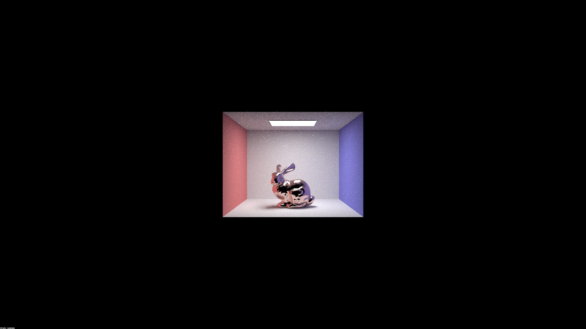
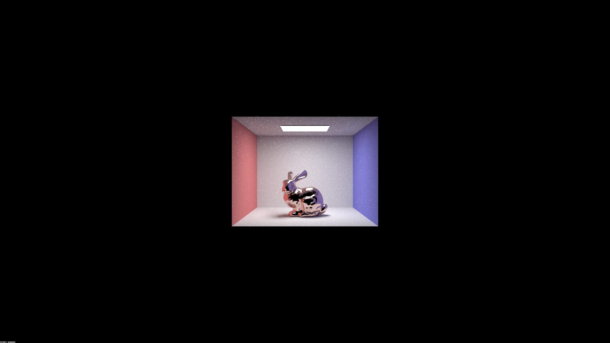

Show a sequence of six images of scene CBspheres.dae
rendered with max_ray_depth set to 0, 1, 2, 3, 4, 5, and
100. The other settings should be at least 64 samples per pixel and 4
samples per light.
Using -s 256 -l 16 -r 1920 1080: |
max_ray_depth | Result | |—————–|———————————-| | 0 |  | | 1 |
| | 1 |  | | 2 | | | 3 |
| | 2 | | | 3 |  | | 4 |
| | 4 |  | | 5 |
| | 5 |  | | 100 | |
| | 100 | |
Point out the new multibounce effects that appear in each image.
Explain how these bounce numbers relate to the particular effects that
appear.
We can see a progressive change with the rising
max_ray_depth: at 0 bounce, we can only see the direct
light from light source; at 1 bounce, we can additionally see all direct
reflection from all surfaces and highlights on spheres; at 2 bounces,
secondary reflection of its surrounding begins to appear on the metallic
sphere, and the glass sphere starts to reflect light (however, refract
light doesn’t escape the sphere, so the sphere is significantly dimmer),
also the ceiling is now lit; at 3 bounces, the glass sphere becomes more
transparent and now has proper refraction effects, and we can see the
refracted light in its shadow; at 4 bounces, the glass sphere clears up
more, and a projection of rays appears on the blue wall (rays get
reflected from metallic sphere into the glass sphere, and refracted
towards the wall), also note that the glass sphere reflection on the
metallic sphere starts clearing up as well (with 1 depth delay); 5
bounces and 100 bounces only provides slight visual quality improvements
comparing with previous images.
 | | 0.25 | | | 0.5 |
| | 0.25 | | | 0.5 |  |
| |  |
|  | Using
parameters:
Using
parameters: